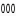
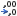

Opmaak getallen
Hoe je snel een getal kunt opmaken in een van de voorgedefinieerde opmaakstijlen.
Getallen kunnen op allerlei manieren worden weergegeven, met of zonder cijfers achter de komma, met een valutasymbool, met diverse scheidingstekens, in een datum- of tijdnotatie, enz. En wanneer de voorgedefinieerde opmaakmogelijkheden niet voldoen kun je ook nog zelf een opmaak definieren.
Bij de invoer van sommige getallen worden deze automatisch in de juiste opmaak gezet.
- Wanneer je in een cel intypt 19% dan herkent Excel het procentsymbool en toont de inhoud als een percentage: 19%. De inhoud van de cel wordt dan 0,19 en niet 19.
- Wanneer je in een cel intypt €123,45 dan ziet Excel dat het om een geldbedrag gaat. De inhoud van de cel wordt dan 123,45 en de inhoud wordt rechts uitgelijnd getoond als € 123,45.
- Wanneer je in een cel intypt 1/2 dan denkt Excel dat het om
een datum gaat en wordt de inhoud getoond als
1-feb.Waarschuwing: Excel slaat datums en tijden op als seriële getallen, te beginnen bij 1 januari 1900 als nummer 1. Nummer 2 is dan 2 januari 1900, enz. En wanneer je 1/2 in een cel intypt, dan voegt Excel daar autmatisch het huidige jaartal aan toe, dus bijvoorbeeld 1-2-2013 en de echte inhoud van de cel is dan 41306.
In het midden staan de opdrachtknoppen voor een paar veel gebruikte opmaakstijlen:
- Financiële getalnotatie. De keuzepijl geeft een paar valutasymbolen.
- Procentnotatie.
- 
- Duizendtalnotatie
- Meer decimalen.
- 
- Minder decimalen
Wanneer de gewenste opmaak niet in de lijst voorkomt dan kun je klikken op Meer getalnotaties.... Dan verschijnt het dialoogvenster Celeigenschappen met de tab Getal geselecteerd. Hier kun je zelf een opmaak definieren.